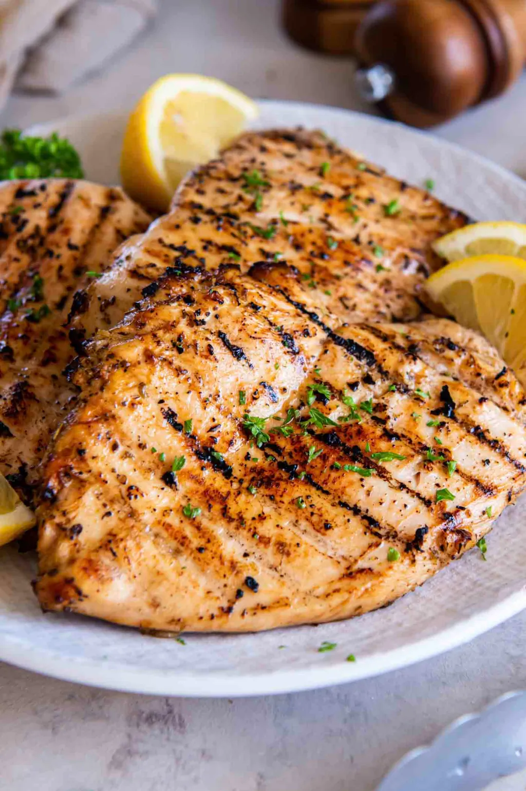

Best Grilled Chicken
This is a
tender, juicy lemon-garlic grilled chicken with a golden-brown sear. By pounding the
meat to an even thickness and marinating it in a blend of olive oil, fresh lemon, and
herbs, you get a bright, savory flavor that stays moist even over high heat.
It’s a healthy, versatile protein that’s perfect for summer salads, meal prep,
or a quick weeknight dinner.

Ingredients
- Chicken: 4 boneless, skinless chicken breasts (about 2 lbs)
- The Acid: ¼ cup fresh lemon juice (tenderises the meat)
- The Fat: ¼ cup extra-virgin olive oil (keeps it moist)
- Aromatics: 3–4 cloves garlic, minced
- Seasoning: 1 tsp dried oregano, ½ tsp salt, ½ tsp black pepper, and ¼ tsp chili powder
Procedure
- Pound the Chicken: Place chicken between plastic wrap and use a meat mallet or rolling pin to pound it to an even ½-inch thickness.
- Marinate: Whisk the marinade ingredients in a bowl or zip-top bag. Add the chicken, ensuring it is well-coated. Refrigerate for 30 minutes to 2 hours (do not exceed 2 hours as the lemon juice can make the meat tough)
- Preheat & Oil: Heat your grill to medium-high (375–450°F). Clean and lightly oil the grates to prevent sticking
- Grill: Place chicken on the grill. Cook for 5–8 minutes per side with the lid closed. For best results, start on a hot zone for a sear, then move to a cooler zone to finish
- Check Temperature: Chicken is safe at an internal temperature of 165°F (74°C).
- Rest: Remove from heat and let it rest for 5 minutes before slicing. This allows juices to redistribute so they don't run outRest: Remove from heat and let it rest for 5 minutes before slicing. This allows juices to redistribute so they don't run out
Back to Home